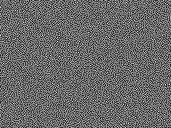
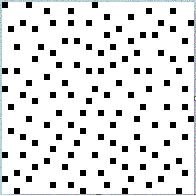
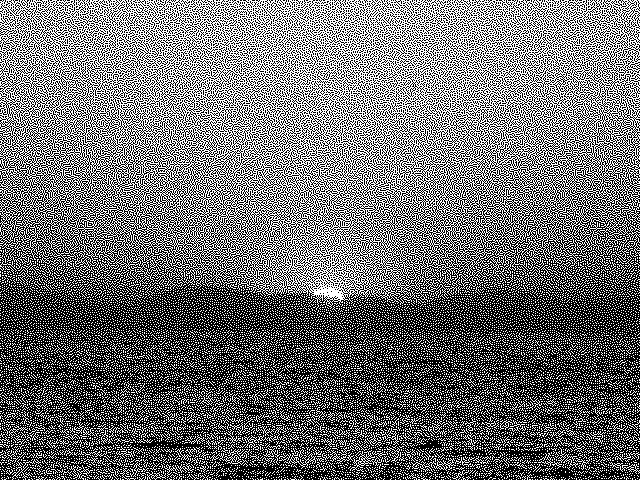
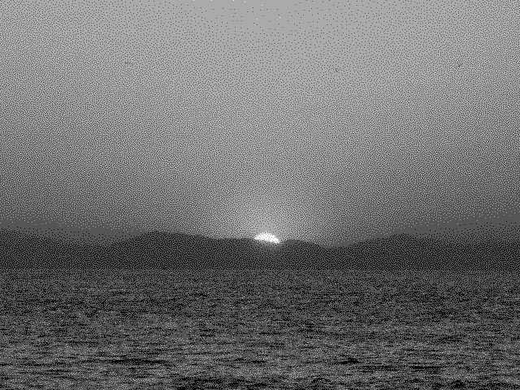
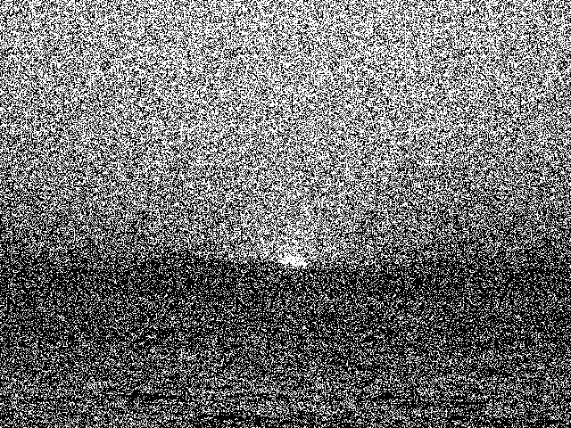
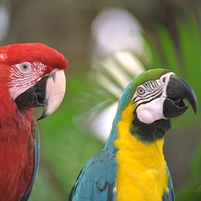
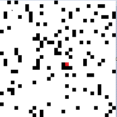
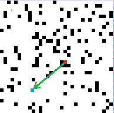

Latest Topics on Blue Noise
Blue noise has been used in the printing technique called digital halftoning.Since then, blue noise has been applied as an alternative to random numbers in fields such as gambling, gaming, and pathfinding.
Research after 2020 has reported that using blue noise instead of random numbers for initializing parameters can improve the generation efficiency of generative AI.
The reference below reports a phenomenon in which image generation using Generative Adversarial Networks (GANs) becomes more efficient when using correlated sequences (blue noise is a type of correlated sequence) rather than purely random numbers. This may be related to the phenomenon where using blue noise in halftoning produces significantly better images than using white noise.
This library provides blue-noise versions of the C++ srand/rand functions and Python's random functions (including numpy). Feel free to try them out.
| GIF animation comparing white noise and blue noise using the same threshold value | |
|---|---|
 |
 |
| White Noise | Blue Noise |
Toshihiko Katsuta, *The Science of Randomness*, Asahi Shinsho
Chapter 3, “Random Futures,” introduces the research of Professor Atsushi Uchida from Saitama University.
Although blue noise is not explicitly mentioned, there is a discussion on the use of correlated random sequences—where the next number is somewhat related to the previous one (though such sequences might no longer be called random)—in applications like avoiding congestion in communication and traffic. It is suggested that these correlated sequences (with blue noise being one example) may be more suitable than random numbers for such use cases.
As seen in the above images, when using random numbers (white noise) to select alternative routes for congestion avoidance, the chosen route may be similar to the original one. However, with blue noise, it is guaranteed that the alternative route will be significantly different from the original.
Back to Top
Overview: Sequences More Uniformly Distributed than Random Numbers
- Section 1 explains what blue noise is. Blue noise is a sequence derived from random numbers and processed to eliminate bias in values.
- Section 2 describes historical applications of blue noise. It has mainly been used in printing technology known as "halftoning".
- Section 3 explains the generation algorithms of blue noise and methods for speeding them up. The major drawback of blue noise is the enormous computational cost required to generate the sequences.
- Section 4 discusses potential future applications of blue noise.
- Section 5 is a manual for building and using this library. The core is implemented as a C++ class library and is OS-independent.
In ideal random numbers, there is no correlation between a number and the ones that follow.
However, blue noise does exhibit correlation—therefore, it is not truly random.
Nevertheless, to the human eye, blue noise appears more evenly and randomly distributed than random numbers.
Halftoning is a technique that expresses grayscale using only black and white, or full color using RGB or CMYK.
Blue noise has primarily been used in printer drivers and printing hardware circuitry.
Although pre-generating the sequence is necessary, the time required for generation cannot be ignored.
Moreover, traditional generation algorithms cannot be parallelized. According to the original paper, computing a 8192×8192 (2^26) sequence would take several months.
This library introduces a method capable of generating such sequences in a short time.
A dynamic link library is provided (with bluenoise()/sbluenoise(int seed) functions as replacements for rand()/srand(int seed)), accessible from Python, C#, and other languages. This is implemented for Windows.
The dynamic link library only serves as a bridge to the core API, so porting to other operating systems is straightforward.
This library does not depend on any external libraries.
Both makefiles and Visual Studio project files are included.
It can be built as either 32-bit or 64-bit, but for generating large matrices (larger than 4096×4096), a 64-bit environment is required.
Section 1: What is Blue Noise?
Blue noise is not a random number. It is a sequence that is more uniformly and evenly distributed than random numbers, generated through extensive computation based on random numbers.
While random numbers can be generated almost in real time, blue noise cannot be generated in real time because its generation requires significant computation time.
Therefore, it is necessary to precompute and prepare an M×N numerical matrix called a blue noise matrix.
M and N can differ, but extremely large or small aspect ratios may cause problems. Unless there is a specific reason, a square matrix (M = N) is recommended.
Due to memory constraints, generating a matrix like 16384×8192 is also acceptable.
You might wonder if the same blue noise is always used, but there's no need to worry.
A portion of a blue noise matrix is still blue noise, and multiple concatenated blue noise sequences also form valid blue noise.
This makes it easy to implement a mechanism similar to srand(int seed) for random number initialization.
For halftoning on large or high-resolution printers, larger matrices result in better print quality.
For general use as a substitute for random numbers, smaller matrices like 256×256 to 1024×1024 are usually sufficient.
The image on the right shows blue noise derived by processing a white noise matrix.
Both images have the same density.
| Images of White Noise and Blue Noise | |
|---|---|
 |
 |
| White Noise (rand() function) | Blue Noise (bluenoise() function) |
A magnified portion of the images is shown below.
 |
 |
| White Noise A random number sequence generated using the rand function. It appears visually biased and not truly random to human perception. |
Blue Noise Blue noise obtained by processing white noise. It appears visually uniform and unbiased to human perception. |
Back to Top
Section 2: Applications of Blue Noise
Blue noise has been used in digital image halftoning.Halftoning is a technique developed to print grayscale images using black ink only, or to print full-color images using a few colors of ink.
In printing with blue noise, it is theoretically possible to achieve high-quality printing by sending just one pixel of image data and as many blue noise values as the number of color channels (planes) to the printer.
In practice, data is often sent to the printer one line at a time.
|  |  | |
| Original 256-level grayscale image | 2-level halftoned image | 4-level halftoned image |
In the printing domain, dithering techniques are used for printing grayscale images using only black and white inks, and for printing color images using CMYK inks with 4 levels each.
A high-quality dithering method is the error diffusion method. It reduces the total error by distributing the quantization error of a pixel to neighboring pixels yet to be processed.
In the Floyd & Steinberg-style error diffusion method, the error of a pixel is distributed to its right, bottom-left, bottom, and bottom-right neighbors.
Although it produces high-quality results, it is computationally intensive, algorithmically complex, and difficult to implement in hardware.
In contrast, the ordered dithering method compares a pixel's value with a corresponding value in a noise array to determine the output. This method is computationally light and easier to implement in hardware.
However, when white noise is used in ordered dithering, the result is of lower quality compared to error diffusion.
 |
 | |
| Original image | Error diffusion | Ordered dithering (using white noise) Uses the rand function (pseudo-random numbers). The image appears visually noisy and unpleasant. |
By using blue noise instead of white noise, it is possible to build an ordered dithering system that is compact in memory, fast, simple, and high-quality.
For each pixel, the output value can be determined by comparing it to a corresponding element in the blue noise array.
|
|||
| Original image | Error diffusion (2 levels) | Ordered dithering (blue noise, 2 levels) | Ordered dithering (blue noise, 4 levels) |
|  | |||
| Original image | Error diffusion (4 levels) | Ordered dithering (blue noise, 4 levels) |
Comparison of Error Diffusion and Blue Noise Methods
Error diffusion produces sharp images, but gradient areas tend to appear blotchy.The blue noise method introduces slight noise compared to error diffusion, which smooths out gradients due to the presence of noise in those regions.
To improve the blotchy areas in error diffusion, random noise is sometimes added to the error distribution. As a result, the output becomes visually similar to that of the blue noise method.
In terms of processing time, the simpler blue noise method is significantly faster. It only requires sequential access to array elements and comparison with pixel values.
A program to generate threshold matrices for the blue noise method quickly (e.g., a 512×512 matrix in a few seconds) is also provided, allowing customization.
The blue noise generated by this program is used in firmware for special-purpose large-format printers (several meters wide), such as for specialty printing.
In addition to dithering, blue noise can also be used for audio noise reduction.
Blue noise has the following characteristics:
- A part of a blue noise matrix is itself valid blue noise.
- A concatenated blue noise matrix is also valid blue noise. Even when connecting the left and right edges or the top and bottom edges, no areas of low or high density appear.
- That said, the larger the blue noise matrix, the better the quality. If the screen size is 4096×2048 and a 32×32 blue noise pattern is tiled, the repetition becomes noticeable.
Thanks to these two properties, once a single blue noise sequence is prepared, it becomes extremely easy to generate different sequences each time, much like using a random seed.
Even when changing the starting index in the blue noise array (matrix), you still get a complete blue noise sequence. Looping from the end back to the beginning still preserves the quality.
In other words, you can implement the same functionality as a random seed simply by using modular arithmetic for access.
If the blue noise matrix is as large as 16384×16384, the probability of generating the same sequence with a reused seed is only 1 in 270 million.
 |
|
| 8×8 Blue Noise | 256×256 Blue Noise |
Section 3: Generation Algorithm and Ultra-fast Generation Algorithm
The traditional algorithm used is the void-and-cluster algorithm.It starts from an n×m pixel white noise image. One pixel is repeatedly moved from the highest-density region to the lowest-density region, until no more pixels can be moved.
|
 |  |
 |  |
| Initial white noise | Pixel with highest density (red) | Pixel with lowest density (blue) | Move | Result after movement |
Moving a single pixel changes the highest- and lowest-density regions across the entire image, not just locally.
Until convergence is reached, enormous computation is required—an 8192×8192 image takes about one month to compute, and even larger sizes can take several months to a year.
Since each pixel movement alters the density distribution, parallelization is not feasible.
Our high-speed blue noise generation algorithm produces matrices 10 times faster for 256×256 and over 1000 times faster for 16384×16384 compared to the traditional method. The performance gain becomes more significant as the matrix size increases.
The fast algorithm requires a large amount of memory. The maximum matrix size that can be generated is:
- Grayscale (1 plane): approx. 8192×8192 on a machine with 6 GB RAM.
- Grayscale (1 plane): approx. 16384×16384 on a machine with 16 GB RAM.
- 4-plane (CMYK): approx. 8192×8192 on a machine with 8 GB RAM.
- 3-plane (RGB): approx. 16384×16384 on a machine with 24 GB RAM.
Switching between 32-bit and 64-bit versions only requires recompilation and relinking.
For the Windows version, the only difference in linker options is /MACHINE:X86 for 32-bit and /MACHINE:X64 for 64-bit.
Processing speed for the 64-bit version (Intel(R) Core(TM) i7-9750H CPU 2.6GHz, 32GB RAM):
- 256×256 blue noise: 6.7 seconds
- 512×512 blue noise: 7.8 seconds
- 1024×1024 blue noise: 59.3 seconds
- 2048×2048 blue noise: 429.2 seconds
- 4096×4096 blue noise: 2499.0 seconds
- 8192×8192 blue noise: 14465.5 seconds With our algorithm, a computation 8192×8192 would take several months can now be completed in about 4 hours(1000 times faster).
Section 4: Potential Applications
- Use in game middleware development Pseudo-random numbers with some degree of correlation (which may no longer be considered truly random) are used to control character placement and jackpot (gacha) occurrence rates in games.
- According to the reference mentioned earlier, using correlated random numbers for initializing parameters has been shown to improve image generation efficiency in GANs (Generative Adversarial Networks).
This is an emerging field. No related academic papers have been published yet, and research is currently focused on identifying the conditions under which correlated random numbers are effective.
They are used to trigger events in a "uniformly irregular" manner—more evenly distributed than typical random numbers.
One of the key properties of blue noise is that any subset of it is also valid blue noise.
With random numbers, the average of a small segment may differ significantly from the overall average, unless the segment is large.
In contrast, any portion of a blue noise sequence—no matter how small—has an average equal to that of the entire sequence.
This enables stable and balanced control over event probabilities without bias.
It allows for consistent control of phenomena like consecutive jackpots or consecutive misses in games and gambling scenarios.
For example, with blue noise, outcomes can be made to "feel" random yet controlled: a jackpot occurs once every 11 tries, two jackpots in a row once every 44 tries, and three jackpots in a row once every 176 tries. As a result, it guarantees that there will be no more than 10 consecutive misses.
Character placement can also be controlled to avoid clustering—or to deliberately induce clustering—using simple threshold comparisons.